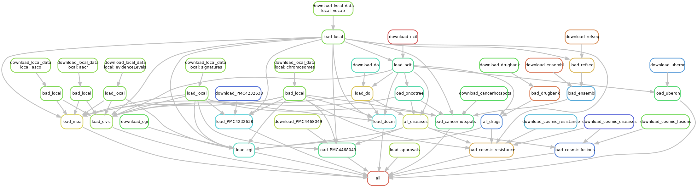

GraphKB Loader¶


This repository is part of the platform for oncogenomic reporting and interpretation.
This package is used to import content from a variety of sources into GraphKB using the API.
- Loaders
- Ontologies
- Knowledge Bases
- Guidelines for Developers
- Getting Started
- Creating a new Loader
- Initializing GraphKB Content
Automatic Import modules are provided for a variety of input sources. To Start importing external data, first the GraphKB API must already be running. Then the command line interface can be used for upload. Get the help menu detailing the commands and required inputs as follows
node bin/load.js -- --help
or using docker
docker run bcgsc/pori-graphkb-loader --help
Loaders¶
Ontologies¶
- ChEMBL
- Disease Ontology
- DrugBank
- Ensembl
- Entrez Utilities
- FDA SRS
- FDA Approval Announcements
- HGNC
- NCIt
- OncoTree
- GraphKB Ontology JSON
- RefSeq
- Uberon
Knowledge Bases¶
- Cancer Genome Interpreter
- Cancer Hotspots
- CGL
- CIViC
- ClinicalTrials.gov
- COSMIC
- DGIdb
- DoCM
- MOAlmanac
- OncoKB
- PMC4468049
- PMC4232638
Guidelines for Developers¶
Getting Started¶
To write and test the GraphKB loaders you will need the following
- NodeJS version 12 or higher
- An instance of the GraphKB API and its required OrientDB instance
- An instance of keycloak for testing authentication
If you do not already have access to a development server of the GraphKB API, the easiest way to set this up is with docker. Follow the developers install instructions from the PORI user guide.
Once you have the GraphKB API and keycloak server running you are ready to start writing and testing loaders.
clone this repository and install via npm
git clone https://github.com/bcgsc/pori_graphkb_loader.git
cd por_graphkb_laoder
npm install
The tests can be run with the following command
npm run test
Run the loader with the -h flag to see the user help menu
npm start -- -h # (1)
- the
--must be used so that arguments following it are passed to the script being called by the start command and not node itself. You can also run the script directory withnode bin/load.js
Now you are ready to test running your first loader against the dev API and keycloak instance you set up earlier. It is simplest to run a loader which does not require any preloaded data such as one of the JSON ontology files included in the data directory.
npm start -- file ontology data/vocab.json -g http://localhost:8080/api -u graphkb_importer -p password # (1)
- "password" is the default password, and "graphkb_importer" is one of the default users used when setting up the development environment with docker-compose. Things should be changed to match the keycloak user in whatever instance you are running the loader against.
Creating a new Loader¶
Loaders should be created with a directory directly under src name after the source of the content being loaded. The directory should contain a README.md describing the loader and content and how to obtain the data used by the loader.
There are 2 main patterns used by the loaders
API Loaders¶
These loaders do not require a file input and directly access an API (ex. CIViC).
Their main module will export a function called upload which has the following signature
/**
* @param {object} opt options
* @param {ApiConnection} opt.conn the api connection object
*/
const upload = async ({conn}) => {
conn above will be an ApiConnection instance that has already been authenticated against the
GraphKB API instance.
File Loaders¶
Other loaders which use a file to load content follow a similar pattern except the function they
export is called uploadFile and accepts an additional argument. For example see the disease ontology loader.
/**
* @param {object} opt options
* @param {string} opt.filename the path to the input JSON file
* @param {ApiConnection} opt.conn the api connection object
*/
const uploadFile = async ({ filename, conn }) => {
Initializing GraphKB Content¶
For convenience, a snakemake workflow is included to run all available loaders in an optimal order to initialize the content in a new instance of GraphKB. This is done via python snakemake. To set up snakemake in a virtual environment run the following
python3 -m venv venv
source venv/bin/activate
pip install -U pip setuptools wheel
pip install snakemake
Then the workflow can be run as follows (single core by default but can be adjusted depending on your server settings)
snakemake -j 1

You will want to pass snakemake the specific GraphKB instance you are working with as well as the credentials of the user that will be uploading. If you have followed the docker install demo instructions this might looks something like this
snakemake -j 1 \
--config gkb_user='graphkb_importer' \
gkb_pass='secret' \
gkb_url='http://localhost:8080/api'
The COSMIC and DrugBank options require licensing and are therefore not run by default. If you have a license to use them then you can include one or both of them by providing email and password as config parameters
snakemake -j 1 \
--config drugbank_email="YOUR EMAIL" \
drugbank_password="YOUR PASSWORD" \
cosmic_email="YOUR EMAIL" \
cosmic_password="YOUR PASSWORD"
